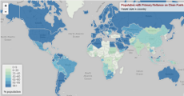

Looking for something? About | Projects | Speaking and Resources | Elsewhere on the Interwebz
Hello World
Hi, I'm Christine. I'm currently pursuing an MS at the University of Chicago Harris School's program in Computational Analysis and Public Policy.
I'm a programmer who likes working on social and civic problems with human impact. I love solving puzzles with code and data. Last summer, I served as a fellow in the Mayor's Office of Chicago where I shipped code, analyzed data, and recommended polices to solve the city's challenges related to sustainability, absenteeism, criminal justice, and self-driving cars. I also spent a good deal of the summer teaching policy wonks to code and honing my foosball skills.
In previous lives, I was an international development project coordinator for Education Development Center, a climate change organizer for the Union of Concerned Scientists, an agricultural intern on a vegetable farm, and an apprentice builder of solar hot air panels. In 2013, I spent the better part of the year in Xi'an, China as a Fulbright-Hays Scholar.
When I'm not at my computer, I like to be far, far away from my computer. That usually means hiking, camping, or just being outdoors.
Selected Projects
Meet Halfway
www.meethalfway.io Meet Halfway finds mutally convenient meeting destinations based on starting locations, travel methods, and preferred meeting location type. The platform preserves privacy so that you can meet friends, strangers, or acquaintances without revealing your address. Suggestions are provided with fairness scores and approximate travel times to help inform your decision. Meet Halfway currently works for addresses within the United States.
March 2016 | Django, PostgreSQL, Bootstrap, JavaScript, Google Maps API Find the code on github.
Detecting Bias in Police Complaints with Machine Learning, June 2016
This project sought to detect potential bias in police investigations using differentiated feature sets with supervised machine learning. The project tested the hypthesis that the inclusion of complainant demographic data would boost the predictive abilities of modeling the outcome of police misconduct complaints in Chicago.
May 2016 | Python, Pandas, SKLearn, PostgreSQL, PostGIS, Matplotlib, NetworkX, Google Maps API Find the code on github. Read the report.
Visualizations
|  | Choropleth Map% Population with Primary Reliance on Clean Fuels January 2016 | Created for the Chicago Policy Review Made with JavaScript in Leaflet and data from WHO. See it on on bl.ocks.org or check out the data and code. |
Talks, Events, & Resources
South Side Civic Scope-a-thon, October 2016
As co-president of South Side Civic, a CAPP-student led group at UChicago, I helped organize the second annual Civic ScopeAthon. Part hackathon, part case competition, the Civic ScopeAthon's main objective is to help students learn problem scoping skills while competing to solve data and technology challenges for local civic organizations. Check out our problem scoping worksheet on Google.
Markdown and LaTeX, April 2016
This workshop was designed for policy students at the University of Chicago. The goal was to introduce students to Markdown and LaTeX for easier and prettier report generation. Find the slides on github.
Python 101 for Policy - Mob Programming, July 2016
This introductory workshop was designed for policy professionals in the Mayor's Office of Chicago. The goal was for participants to gain a basic understanding computer programming and how it can be used in a policy setting. Participants successfully wrote FizzBuzz by the end of the workshop. Find the slides on Google.
Find me elsewhere...
Read my tweets, peruse my GitHub, or check out my LinkedIn, if you're into that stuff.
Or, you can send me an email at cszchung [at] gmail [dot] com.